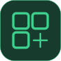

extensifyA calmer, more useful web is a few clicks away.
Extensify is a small home for browser addons you choose. Set it up once in Chrome or Edge, then explore and install addons right from your browser.
Download Extensify Free · Open source · No account neededReady in about two minutes
Load the downloaded folder into your browser once. You can update Extensify later by downloading the latest ZIP and reloading it.
- 01
Download and unzip
Use the download button above, then extract the ZIP. Open the extracted extensify-main folder so you can see its files.
- 02
Open your extensions page
In Chrome, visit
chrome://extensions. In Edge, visitedge://extensions. - 03
Turn on Developer mode
Switch on Developer mode on the extensions page. In Chrome the switch is near the top right; in Edge it is in the left panel.
- 04
Load Extensify
Choose Load unpacked and select the extracted folder that contains
manifest.json. Extensify is now installed in your browser. - 05
Pin it and make it yours
Open your browser’s extensions menu and pin Extensify for quick access. Open it to browse addons or build your own. Addons start disabled, so you choose what to enable.